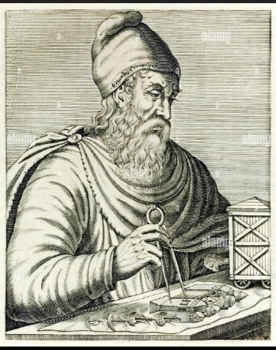
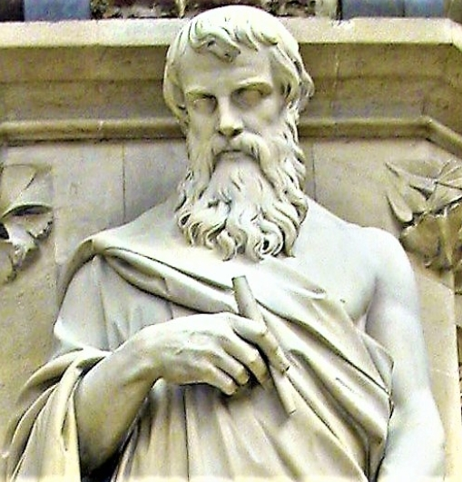
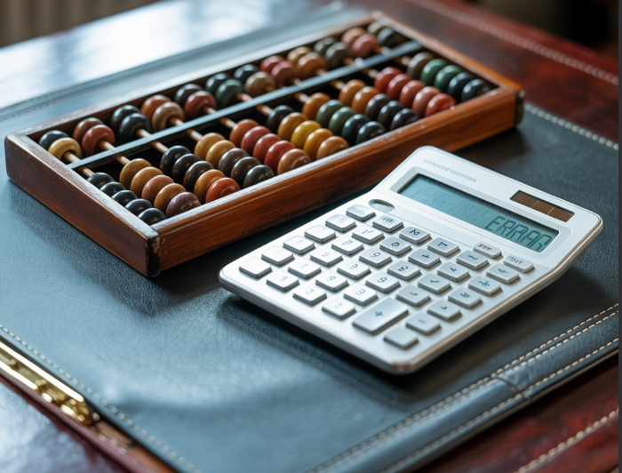
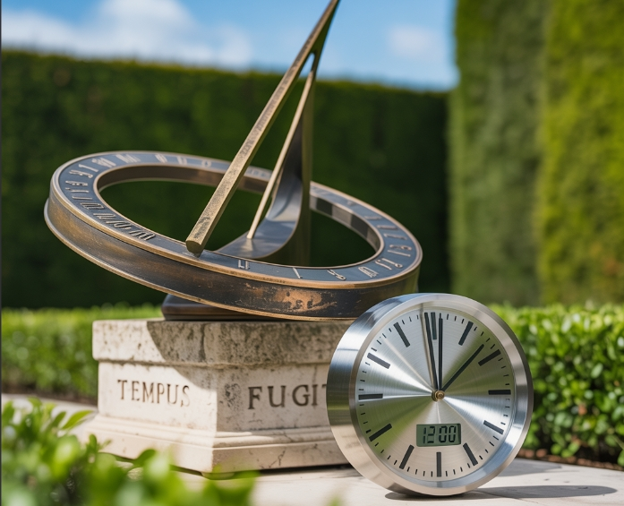

History of Mathematics
Today, math is not just a tool but a universal language of science and technology.
Get inspiredFamous Mathematicians
The stories of famous mathematicians, their discoveries, innovations, and perseverance through adversity serves as an inspiration to math students and enthusiasts around the world

Archimedes - A greek scientist, mathematician and physician, his best contribution is known as the invention of compound pulleys, antiquity, and screw pump.

Euclid (c. 300 BCE) - Known as the "Father of Geometry," his work "Elements" is one of the most influential works in the history of mathematics.
Srinivasa Ramanujan - With almost no formal training in pure mathematics, he made substantial contributions to mathematical analysis, number theory and continued fractions.
The History of Mathematics
Mathematics is one of humanity’s oldest sciences. Long before the written word, early humans used tally marks carved into bones and stones to track livestock, trade, or time. Ancient civilizations like the Babylonians, Egyptians, Chinese, Indians, and Mayans developed counting systems to solve everyday problems—measuring land, trading goods, or predicting the stars.
- Babylonians (c. 2000 BCE): Developed a base-60 number system, which is why we have 60 seconds in a minute and 360 degrees in a circle.
- Egyptians (c. 3000 BCE): Used geometry for land surveying and construction, leading to the development of basic algebraic concepts.
- Greeks (c. 600 BCE - 300 CE): Made significant contributions to geometry, with figures like Euclid, Pythagoras, and Archimedes laying the groundwork for modern mathematics.
- Indians (c. 500 CE): Introduced the concept of zero as a number and developed the decimal place value system, which is fundamental to our current number system.
- Islamic Golden Age (c. 800 - 1400 CE): Scholars like Al-Khwarizmi advanced algebra and introduced algorithms, which are essential for modern computing.
- Renaissance Europe (c. 1400 - 1600 CE): Saw a revival of mathematical study, with figures like Fibonacci introducing the Hindu-Arabic numeral system to Europe.
Ancient Tools vs Modern Tech
From the abacus to supercomputers, the tools we use to perform mathematical calculations have evolved dramatically over time.

Abacus vs Calculator - One of the earliest counting tools, used for basic arithmetic operations.

Sundials vs Atomic Clocks: Shadows marking time vs hyper-accurate atomic vibrations.
Tally Marks vs Digital Counters: Carved notches vs digital spreadsheets and apps.
Number Systems (Roman vs Arabic)
| Roman Numerals | Arabic Numerals |
|---|---|
| Notation: I, II, III, IV, V, VI, VII, VIII, IX, X | Notation: 1, 2, 3, 4, 5, 6, 7, 8, 9, 10 |
| Used in Europe for centuries, but limited for advanced calculation. Example: MCMLXXXIV = 1984. | Developed in India, spread via Arab scholars, and widely adopted because they allowed easy arithmetic and positional notation. |
| Impact: Without Arabic numerals (and especially zero), modern math, science, and computers would be impossible. | |
Short Introductions to Different Branches of Mathematics
- Arithmetic: The study of basic operations like addition, subtraction, multiplication, and division.
- Algebra: The use of symbols and letters to represent numbers and express mathematical relationships.
- Geometry: The study of shapes, sizes, and properties of space.
- Trigonometry: The study of the relationships between the angles and sides of triangles.
- Calculus: The study of change and motion, involving concepts like limits, derivatives, and integrals.
- Statistics: The collection, analysis, interpretation, and presentation of data.
- Probability: The study of uncertainty and the likelihood of events occurring.
- Number Theory: The study of properties and relationships of numbers, especially integers.